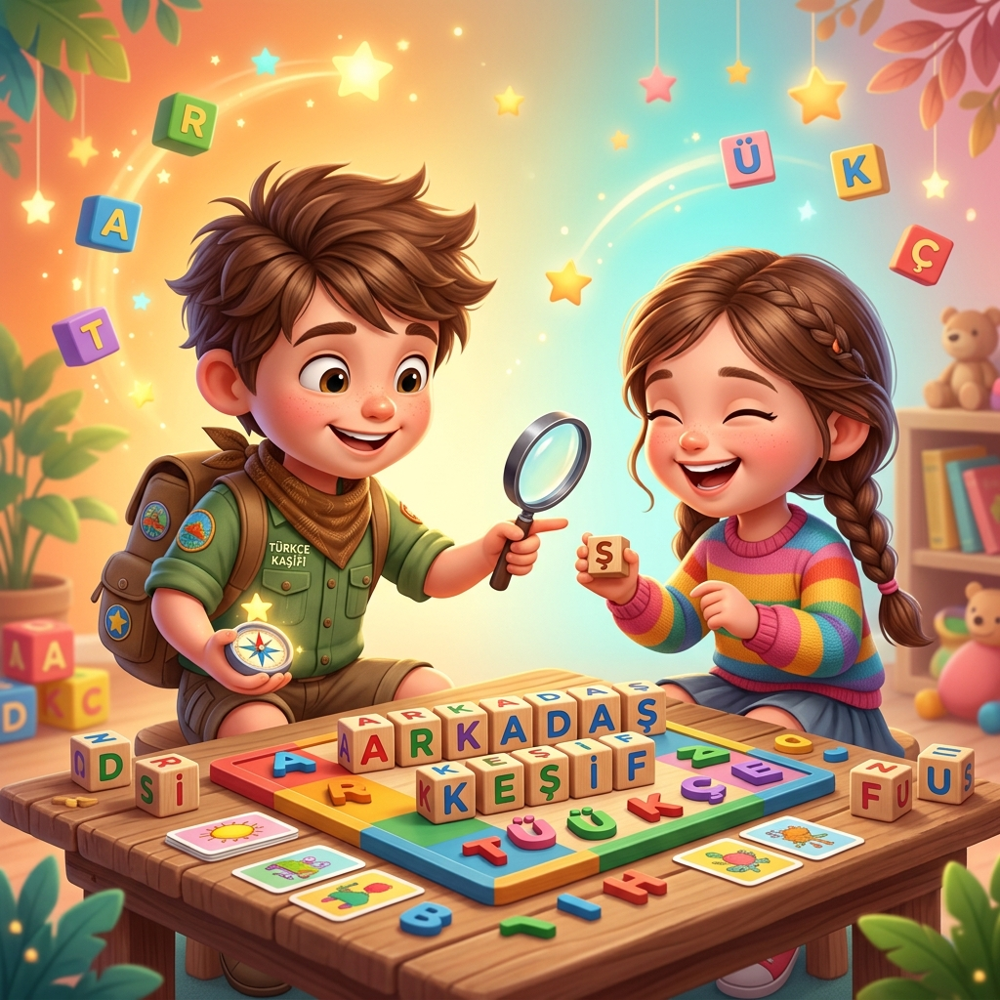

Willkommen bei Einfach Türkisch
Türkisch lernen. Einfach, lebendig und individuell.
👨💼 Für Erwachsene
A1 – C2 Level

Türkisch für Beruf, Alltag & Kultur
Strukturierter Türkischkurs für Erwachsene. Grammatik, Aussprache und Alltagssprache – verständlich, interaktiv und praxisnah.
🎈 Für Kinder (4–12 J.)
Türkçe Kaşifi 🦊

Spiele, Abenteuer & Sprachfreude
Mit unserem Maskottchen "Türkçe Kaşifi" lernen Kinder spielerisch, intuitiv und mit Begeisterung ihre Muttersprache oder Zweitsprache.